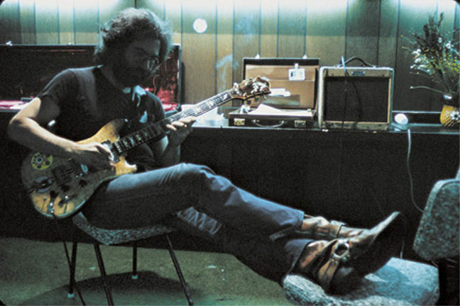
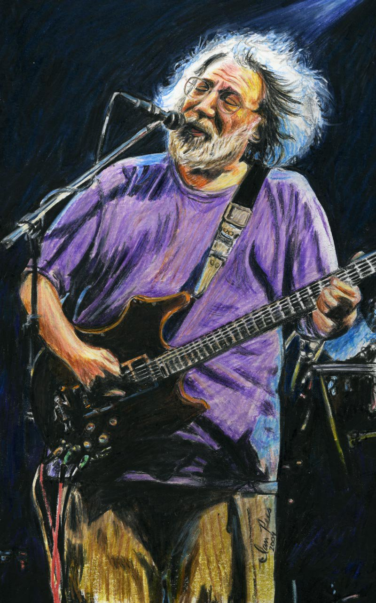

Дже́рри Гарси́я (англ. Jerry Garcia, полное имя — Джером Джон Гарсиа; 1 августа 1942 — 9 августа 1995) — американский музыкант, гитарист, вокалист группы «Grateful Dead», основоположник психоделического рока на западном побережье США.
Стать виртуозом Гарсия смог, даже несмотря на свою искалеченную правую руку — ещё в юности он случайно лишился двух фаланг на среднем пальце правой руки, когда колол дрова.
Джерри Гарсия родился в Сан-Франциско, а играть на гитаре научился, когда ему было 15 лет. В 16 лет Гарсия окончил школу, после чего недолгое время служил в армии. Демобилизовавшись, он поселился в Пало-Альто, где познакомился с будущим автором текстов песен группы The Grateful Dead, Робертом Хантером. Тогда же Гарсия купил себе банджо и начал играть в местных ансамблях кантри. В конце 1964 года один из этих ансамблей, Mother McCree’s Uptown Jug Champions, преобразовался в рок-группу «The Warlocks» а затем несколько позже в «Grateful Dead», а сам Гарсия перешёл на электрогитару. Манера игры Гарсии на электрогитаре вобрала в себя элементы блюграсс и Чака Берри, кантри и современного джаза, что сделало её совершенно уникальной и неповторимой. В первые годы работы с The Grateful Dead Гарсия играл на гитаре Guild, а затем перешёл на Gibson плюс к этому иногда использовал и Fender Stratocaster.
С 1964 по 1966 годы являлся участником коммуны «Весёлые проказники». Большинство акций "кислотных тестов " «Весёлых проказников» происходило с участием The Grateful Dead.
В 1969 году выступал вместе с группой на фестивале в Вудстоке, однако как считают сами «Grateful Dead» выступили они не очень удачно и видео их выступления было изъято из официальной версии видео о Вудстоке. Начиная с 1970-х музыкант стал играть на гитарах, сделанных на заказ, долгое время он пользовался услугами мастера по имени Дуг Ирвин. На одной из заказных гитар, которая получила имя «Tiger», музыкант играл целых 11 лет. В 1990-х годах Гарсия успел поиграть на гитарах другого мастера, Стивена Крайпа.
В 1981 году женился на своей давней знакомой по коммуне «Весёлые проказники» — Кэролин Адамс (англ. Carolyn Adams), также известной как «Горянка» (англ. Mountain Girl). Данный брак продлился до 1994 года, однако Джерри и Кэролин сохраняли дружеские отношения вплоть до его смерти.
Карьера The Grateful Dead продолжалась очень долго и прервалась лишь в 1995 году, когда Джерри Гарсия скончался от сердечного приступа в одной из клиник во время реабилитационного периода, который музыкант проходил после лечения от наркотической зависимости. Согласно желанию покойного прах Гарсии был развеян над Тихим океаном.
Вскоре после смерти в нью-йоркские универмаги Bloomingdales и Macy's хлынули покупатели за галстуками и шарфами, дизайнером которых был гитарист